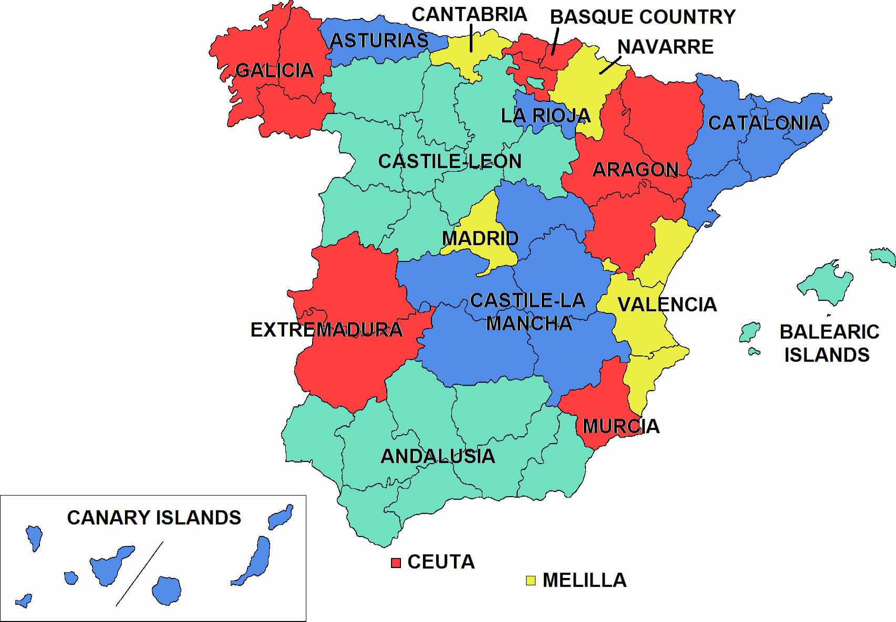

L’Espagne et la Catalogne : entente après le tumulte ?
Le matrimoine de l’Espagne et la Catalogne passe par des durs moments, mais le divorce ne s’est toujours pas produit. Quel avenir pour la relation hispano-catalane ? Chronique d’une histoire turbulente au cœur de l’Union européenne.
Il y a environ un an, les médias internationaux débutaient leurs bulletins d’informations avec des images des charges policières en Catalogne, où un referendum d’autodétermination se tenait même s’il avait été déclaré préventivement anticonstitutionnel par le Tribunal constitutionnel espagnol. Un an après ces évènements, les images de la Catalogne, d’apparentes tranquillités, ne sont qu’un mirage. Avec divers leaders politiques et d’associations civiles en prison en attendant un procès judiciaire, des manifestations dans les rues continuent, tant en faveur que contre la cause indépendantiste, et elles mettent en évidence à quel point la société catalane se trouve maladivement divisée. Que s’est-il passé en Catalogne pour en arriver là ? Quelle est la situation actuelle de l’Espagne ?
Débrouiller cet embrouillement dont on se trouve en Espagne requiert nécessairement de dévider le fil des évènements posément. Depuis 1978, l’Espagne fait partie des démocraties occidentales. A travers la transition espagnole initiée à la mort du dictateur Francisco Franco - qui d’ailleurs reste un sujet encore brûlant - s’établit un État formé par des collectivités régionales appelées communautés autonomes. Ce système a reçu maintes fois l’appellation de fédéralisme asymétrique, puisque certaines de ces entités régionales ont plus de facultés et de compétences que d’autres. A titre d’illustration, il existe un niveau institutionnel intermédiaire entre la communauté et la municipalité aux Iles Canaries et aux Îles Baléares, ainsi qu’il existe une langue propre au Pays Basque, Catalogne, Galice, Baléares, Communauté valencienne, et partiellement à Navarre.

Avec l’entrée dans le XXIème siècle, la demande d’un niveau d’autonomie plus prononcé, notamment pour des questions économiques comme la fiscalité, pour la Catalogne augmentent de manière graduelle. Avec le gouvernement socialiste de José Luis Rodríguez Zapatero s’établit un dialogue qui culmine en 2006 avec l’adoption, par les Cortes Generales (le Parlement et le Sénat de l’Espagne) et puis par votation populaire, d’un Estatut d’autonomie, loi qui, bien évidemment, reste subordonnée à la Constitution. A peine dix jours après son entrée en vigueur, le Parti Populaire, dans l’opposition à cette époque-là, présente un recours d’inconstitutionnalité devant le Tribunal constitutionnel. Les dirigeants dudit parti déclarent que l’Estatut est en fait une sorte de « Constitution parallèle ». Rien d’étonnant lorsque l’on sait que le président de ce parti était, déjà à cette époque-là, Mariano Rajoy.
Le 28 juin 2010 le Tribunal constitutionnel rend anticonstitutionnels certains articles de l’Estatut, précisément ceux qui avaient contenté la partie catalane. Le fil commence donc à s’embrouiller. Une telle suspension, qui a lieu dans un contexte de crise économique fortement lancinante, représente le coup de départ de la radicalisation des demandes du camp indépendantiste. Ceci se matérialise le 1er octobre de 2017, avec le référendum qui parvint à attirer l’attention médiatique internationale.
En effet, la stratégie de passivité du gouvernement central de Mariano Rajoy touche à sa fin le 1er octobre. Après des années d’inactivité politique avec la prétention de mettre fin au conflit à travers l’ignorance de celui-ci, Rajoy décide d’ancrer son action politique sur la défense de la légalité constitutionnelle en vigueur. Ainsi ordonne-t-il une opération policière sans précédent depuis la transition démocratique afin d’empêcher la célébration du référendum, déclaré anticonstitutionnel a priori par le Tribunal constitutionnel.
Effectivement, le poids de la loi se heurte à la légitimité des pouvoirs politiques catalans légalement constitués, et ceci, loin de mettre fin au conflit, l’aggrave. Sans aucun doute, l’action policière du 1er octobre fut le coup de chalumeau qui manquait pour souder l’indépendantiste : les indépendantistes et les autonomistes (ceux qui plaidaient pour un degré d’autonomie plus élevé) se galvanisent puisqu’il ne s’agit plus de soutenir l’indépendance ou pas, mais de soutenir la démocratie face à un « État oppresseur ».
L’Exécutif dirigé par Rajoy ne s’est tenu qu’à cela. Il n’a pas hésité d’activer la procédure prévue par l’article 155 de la Constitution espagnole, selon lequel le Gouvernement régional de la Catalogne est dissolu et de nouvelles élections sont convoquées. Jusqu'à ces élections, qui se tiennent le 21 décembre 2017, s’établit un gouvernement dirigé et géré par le pouvoir central de l’Espagne.
La campagne électorale se déroule avec un climat spécialement tendu en Catalogne. D’un côté, plusieurs leaders de partis politiques et d’organisations de la société civile sont en prison. De l’autre, d’autres échappent vers l’étranger pour ainsi éluder l’application de la juridiction espagnole. Se concrétise ainsi l’européisation d’un conflit régional au sein d’un État membre de l’Union. Pourtant, la Commission européenne se démarque de toute possibilité d’intervention le lendemain même de la tenue du référendum à travers la publication d’un communiqué officiel. Dans celui-ci, la Commission réitère que le référendum revêt un caractère illégal, que le conflit est une affaire interne au Royaume de l’Espagne, que le territoire sortirait de l’Union européenne lors d’un éventuel vote favorable à l’indépendance, et enfin prie aux parties de passer de la confrontation au dialogue. Celui-ci se révèle compliqué d’autant plus que les urnes du 21 décembre octroient une étroite majorité en sièges (non pas en votes) aux trois partis indépendantistes.
Le rôle de la Commission européenne est du moins discutable. Bien qu’une telle affaire affecte d’abord l’État auquel une région appartient, il n’est pourtant pas moins vrai que les questions régionales d’une telle portée incombent aussi l’Union européenne. Ainsi naissent et s’opposent deux argumentations juridiques : d’une part, les partisans d’une médiation européenne mettent en lumière le préambule du Traité sur l’Union européenne, qui établit que les pays de l’UE sont « résolus à poursuivre le processus créant une union sans cesse plus étroite entre les peuples de l'Europe » ; de l’autre, ceux qui considèrent l’affaire catalane comme interne (comme la Commission européenne) invoquent l’article 4 paragraphe 2 du même Traité, dont l’énoncé stipule que l’Union « respecte les fonctions essentielles de l’État […] qui ont pour objet d’assurer son intégrité territoriale ». En dépit du jeu juridique des acteurs concernés, il paraît logique que l’Union européenne, pleinement impliquée dans les négociations du Brexit, ne montre guère de sympathie face à un éventuel « Catexit ».
Malgré tout, le changement d’exécutif espagnol est peut-être venu à point pour la Commission. Après la comparution de Mariano Rajoy face à un juge à cause d’un cas de corruption, le socialiste Pedro Sánchez atterrit dans le Palacio de la Moncloa grâce au soutien de tous les partis politiques du Parlement central, sauf PP et Ciudadanos. Sánchez a été capable de réunir un exécutif hautement qualifié et profondément européiste, notamment avec la figure de Josep Borrell, qui détient le poste de Ministre des Affaires extérieures, Union européenne et coopération. A ce propos, la presse a souvent établi une comparaison entre Sánchez et le président français Emmanuel Macron, pour être jeunes, charismatiques et décidemment européistes. Soit dit en passant, leurs gouvernements se ressemblent aussi récemment pour la démission de plusieurs ministres pour des raisons variées.
Leurs exécutifs ne se ressemblent pas par rapport au fait que le parti socialiste de Sánchez ne dispose que de 84 sièges des 350 au total dans le Parlement. Dès lors, la gestion de la crise catalane est sérieusement entravée, et ce d’autant plus que le PP a la majorité absolue au Sénat. Pour l’heure, Sánchez a repris le dialogue avec le président de la Generalitat Quim Torra, et plusieurs ministres se sont permis de décrire les mesures prises le 1er octobre comme « disproportionnées ». En ce sens, ils n’ont pas tort puisqu’en raison des poursuites légales entreprises contre des leaders politiques et de mouvements sociaux, l’initiative politique est en réalité tombée dans les mains du pouvoir judiciaire, limitant ainsi considérablement une future solution politique.
Le galimatias catalan doit inviter à la réflexion. Le 1er octobre a mis en évidence encore un cas d’une collectivité qui exige un meilleur encadrement de ses particularités dans une Constitution qui, à chaque jour qui s’écoule, se révèle plus rigide et inadéquate. L’Espagne, pays de fortes identités régionales, devrait vouloir les englober justement dans un nouveau cadre constitutionnel, jouissant du consensus de tous les acteurs et réalisé, si besoin, avec l’aide et le conseil des institutions européennes.
L’image de l’Espagne, un des États de l’Union européenne le plus européistes, a été souillée à cause de l’essor d’un nationalisme qui aurait pu être évité. En tant que catalans, espagnols et/ou européens, tous étant conscients des vertus mais aussi des règles du jeu démocratique, il ne serait point tolérable de voir ces images se répéter. Pour la plupart de la société espagnole, et notamment la catalane, celles-ci représentent la réminiscence d’une violence d’autrefois qui continue aujourd’hui marquée au feu dans l’imaginaire collectif et qui n’a pas lieu ni en Espagne ni dans l’Union européenne. Seul le dialogue sérieux entre acteurs politiques (et non pas judiciaires) sera fructueux pour la création d’un modèle territorial qui inclura de manière plus adéquate la diversité qui caractérise et qui devrait configurer l’Espagne démocratique du XIXème siècle.
Bibliographie